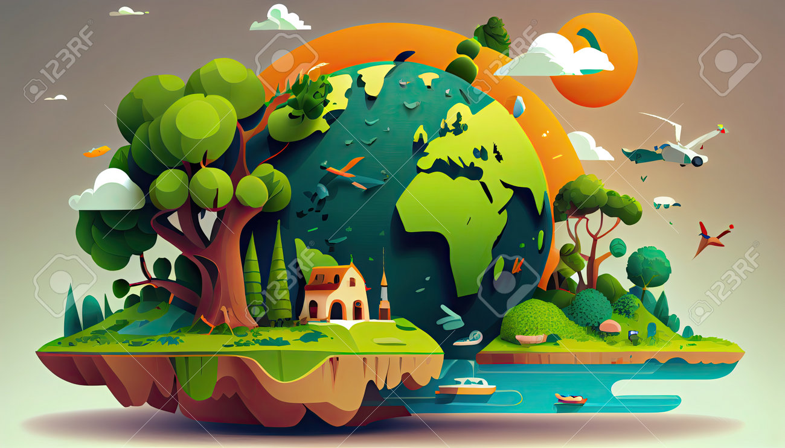

El medio ambiente está formado por todos los elementos naturales como el aire, el agua, el suelo, las plantas y los animales. También incluye los factores climáticos y geográficos que influyen en la vida de los seres humanos. Es esencial para nuestra existencia, ya que de él obtenemos alimentos, agua, aire limpio y materiales para vivir.
La contaminación del aire y del agua, causada por fábricas, vehículos y desechos.
La deforestación, que destruye hábitats naturales y afecta el clima.

Reducir el uso de plásticos y reciclar.

Ahorrar agua y energía eléctrica.
Usar medios de transporte sostenibles como la bicicleta o caminar.